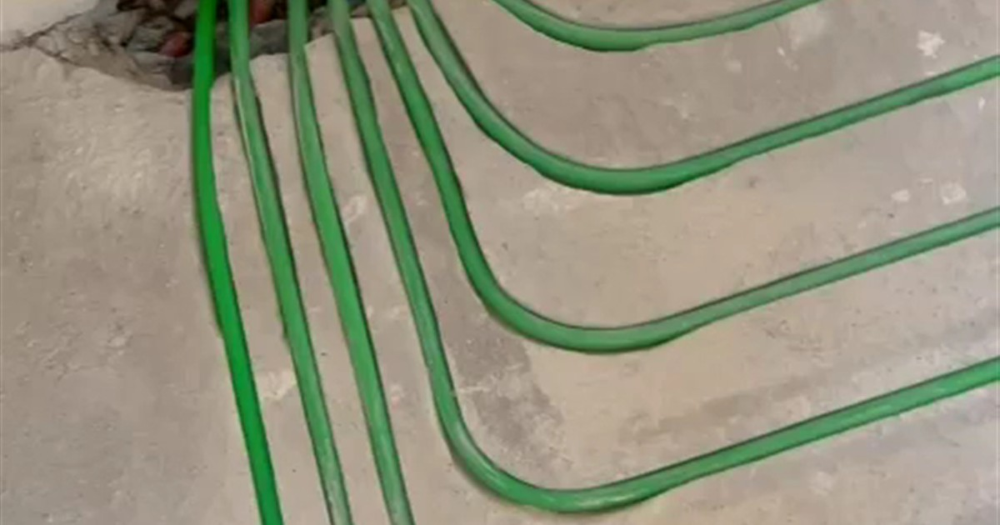

Koszt samego frezowania
U nas frezowanie zaczyna się od 55 zł netto za metr kwadratowy przy powierzchni powyżej 50 m² i rozstawie rur co 12 cm. To cena za wycięcie rowków i przygotowanie posadzki pod ułożenie rur.
Poniżej 50 m² wyceniamy indywidualnie, bo koszty stałe, czyli dojazd, wniesienie sprzętu i organizacja pracy, są takie same przy 30 i przy 130 metrach. Przy małym metrażu stanowią większą część rachunku.
Koszt całej instalacji
Do frezowania trzeba doliczyć rurę, rozdzielacz z szafką, siłowniki, materiał zamykający rowki i robociznę hydrauliczną. Rynkowe widełki dla tradycyjnej podłogówki wykonywanej od zera mieszczą się zwykle w przedziale 120–150 zł za metr kwadratowy samego wykonania, bez źródła ciepła.
Przy frezowaniu odpadają dwie pozycje, które w tradycyjnej metodzie potrafią być największe: skuwanie starej posadzki z wywozem gruzu oraz nowy jastrych. To dlatego frezowanie wypada taniej przy remoncie, mimo że sama usługa jest bardziej specjalistyczna.
Rachunki, czyli druga strona równania
Ogrzewanie podłogowe samo w sobie nie oszczędza energii. Oszczędność bierze się stąd, że pracuje na niskiej temperaturze zasilania, zwykle 30–40°C zamiast 55–70°C w grzejnikach. Im niższa temperatura zasilania, tym wydajniej pracuje źródło ciepła.
Porównania rynkowe dla domu jednorodzinnego pokazują różnicę rzędu kilkunastu do dwudziestu kilku procent na korzyść podłogówki wobec grzejników, przy tym samym źródle. Przy pompie ciepła różnica jest największa, bo pompa najlepiej pracuje właśnie przy niskim zasilaniu.
Konkretna kwota zależy od izolacji budynku, źródła ciepła i taryfy, więc nikt uczciwy nie poda ci jednej liczby bez policzenia strat ciepła twojego domu.
Co realnie podnosi cenę
Gęstszy rozstaw rur. Przy 10 cm zamiast 15 cm rury wchodzi o połowę więcej i tyle samo więcej metrów bieżących trzeba kupić i ułożyć.
Liczba pomieszczeń. Osiem małych pokoi to więcej pętli, więcej siłowników i większy rozdzielacz niż dwa duże pomieszczenia o tej samej powierzchni.
Odległość od rozdzielacza. Każda pętla ciągnie do niego swoje doprowadzenie, a te metry też trzeba kupić.
Stan posadzki. Jeżeli trzeba najpierw zdjąć stary klej po płytkach albo wyrównać podłoże, to osobna pozycja w wycenie.
Kiedy to się zwraca
Przy wymianie samych grzejników na podłogówkę, bez zmiany źródła ciepła, mówimy o kilkunastu procentach na rachunku. Zwrot liczony w latach, ale do tego dochodzi komfort, wolne ściany i brak kurzu unoszonego przez konwekcję.
Przy jednoczesnym przejściu na pompę ciepła rachunek zmienia się skokowo, bo dopiero podłogówka pozwala pompie pracować w zakresie, w którym jest naprawdę wydajna. To jest ten moment, w którym inwestycja zwraca się najszybciej.
Najczęstsze pytania
Ile kosztuje ogrzewanie podłogowe w domu 100 m²?
Samo frezowanie przy stawce od 55 zł netto za m² i rozstawie 12 cm daje około 5 500 zł netto. Do tego dochodzą materiały instalacyjne, rozdzielacz, robocizna hydrauliczna i ewentualne sterowanie. Dokładną kwotę podajemy po ustaleniu rozstawu, liczby pomieszczeń i zakresu prac.
Czy frezowanie jest tańsze od tradycyjnej podłogówki?
Przy remoncie prawie zawsze, bo odpada skuwanie posadzki, wywóz gruzu i nowy jastrych. Przy budowie od zera, gdzie i tak wylewasz posadzkę, tradycyjna metoda bywa tańsza i wtedy tak mówimy.
Czy podłogówka obniży moje rachunki?
Obniży, jeżeli pozwoli źródłu ciepła pracować na niższej temperaturze zasilania. Sama zmiana grzejników na podłogę przy tym samym kotle daje kilkanaście procent. Przy pompie ciepła różnica jest znacznie większa.
Czy trzeba od razu wymieniać kocioł?
Nie. Podłogówkę podłączamy do istniejącego kotła gazowego przez mieszacz, który obniża temperaturę zasilania do bezpiecznej dla posadzki. Wymiana źródła to osobna decyzja, którą możesz podjąć później.